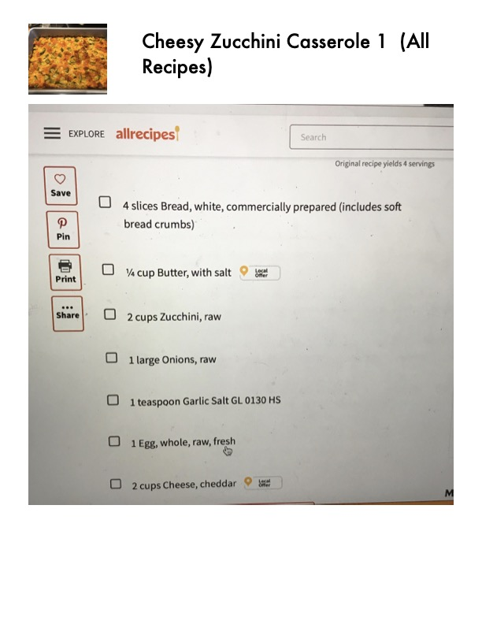

Cheesy Zucchini Casserole

Original cookbook page 74
Recipe from Allrecipes.com - a delicious cheesy zucchini bread casserole that's perfect for using up summer zucchini.
Prep: 15 minutes • Cook: 1 hour • Total: 1 hour 15 minutes
Ingredients
- 4 slices bread, cubed (white, commercially prepared)
- ¼ cup butter, melted
- 2 cups zucchini, diced
- 1 large onion, diced
- 1 teaspoon garlic salt
- 1 egg, whole
- 2 cups cheddar cheese, shredded
Instructions
- Preheat oven to 350°F (175°C).
- Place bread cubes in a medium bowl and pour melted butter over the bread.
- Add the zucchini, onion, garlic salt and egg; mix well.
- Transfer the mixture into a 9x13 inch baking dish and top with the cheese.
- Bake, covered, in preheated oven for 30 minutes.
- Uncover the dish and bake for another 30 minutes until golden and bubbly.
📝 Recipe Notes
Perfect recipe for using up summer zucchini! From Allrecipes.com. Combined recipe from pages 74-75.
Recipe #74 from collection